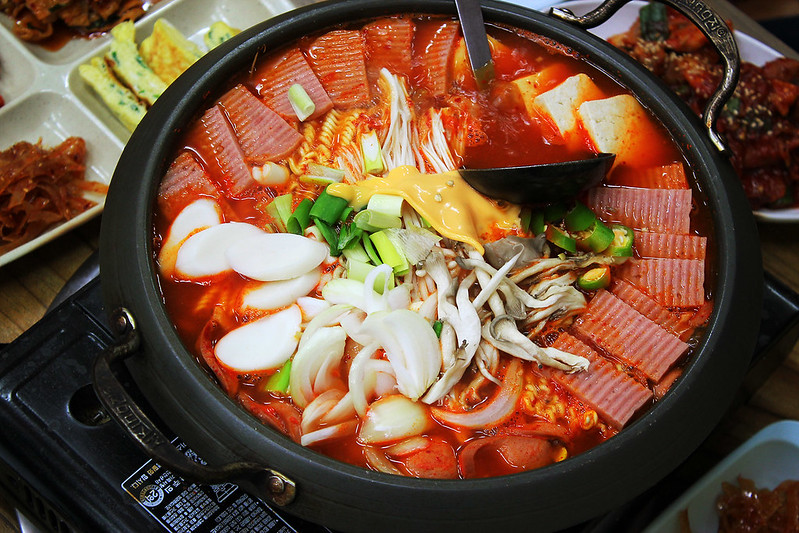

Budae Jjigae (Army Stew) is also another dish that is on the menu at almost every traditional Korean restaurant inside and outside of Korea. It has varying ingredients that makes this dish a type of fusion cuisine which has now become a comfort food for Koreans.
Despite not have a long history, this dish symbolizes a grim time in Korean history. After the Korean War had ended, the country was impoverished and citizens were left with extra foods/ingredients on U.S. military bases. With this interesting assortment of ingredients, the Korean people created this so called army stew. Although this dish represents a time of poverty, the stew persists to be one of the most popular stews.
Most versions of Budae Jjigae consists of sausage, ham, Spam, kimchi, instant ramen noodles, chili pepper paste, and baked beans. Ingredients can be easily modified to include other things, such as rice cakes, mushrooms, cheese, etc.
The stew, with its ingredients of chili pepper paste and kimchi, makes this dish a characteristic Korean dish that has salty and spicy flavors.
It is also important to note that it is tradition that Koreans eat stew together with rice. The stew is usually eaten by scooping out and mixing small portions of the stew with rice. However, not all Koreans eat this way.
Ingredients for Army Stew
- Ham, Sausage, Spam
- Water
- Chili pepper paste
- Kimchi
- Instant ramen noodles
- Baked beans
- Green onions (scallion)

Photo: 와!부대찌개 - Budae Jjigae by Richard Lee at Flickr CC BY-NC-ND 2.0
Basic Recipe for Army Stew
- Dice ham, sausage, Spam into slices or cubes
- Julienne green onions
- In a big flat pot, carefully place ham, sausage, spam, baked beans, kimchi, and scoop of chili pepper paste
- Turn on stove and add in enough water that ingredients are submerged
- Once stew is cooked for a bit (about 10-20 minutes), add in ramen noodles and green onions
- Add in water if stew seems too concentrated
- Keep cooking until all ingredients are cooked
- Serve immediately
- Tips and Notes
- - Amount of all ingredients is up to your discretion.
- - Some common additions or modifications include: sliced rice cake, mushrooms, cheese, tofu, vegetables like bokchoy, chili peppers, onions, other types of noodles, other meats, fish cakes, imitation crab
- - Optional to add in ramen noodle packet to add more flavor
- - Adding beef stock (or other stock) instead of water will add flavor too
- - Stews are eaten together with rice and side dishes